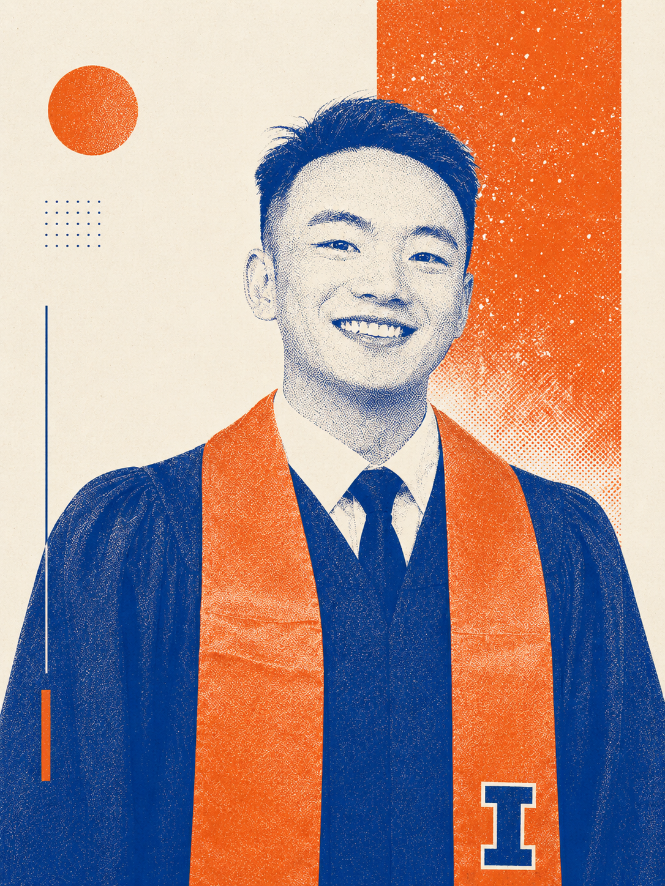

Portrait3 : 4
Researcher / data scientist / visual maker
Seeing society through data.
I work across computational social science, urban data, extreme-value risk, and decision-oriented analytics, turning complex evidence into research, tools, and visual systems. I am open to data science, actuarial, and risk analytics roles.
Why this position
Present, but not performative.
A portrait can make the site more personal without turning it into a conventional résumé landing page.
Desktop: the portrait anchors the left column, the personal statement remains central, and the factual profile stays independently scannable on the right. Mobile: the layout becomes introduction, portrait, then profile. The actual photo should be a clean, vertical 3:4 crop with calm negative space; it can replace this placeholder without changing the layout.